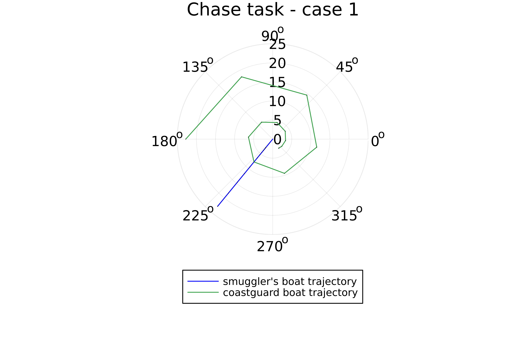
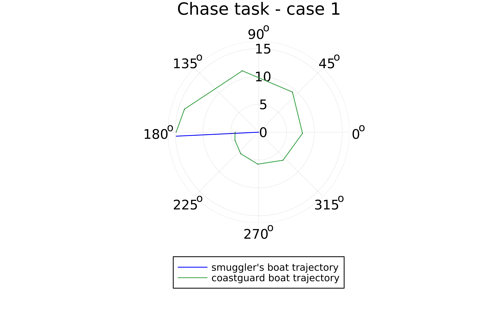

lang: ru-RU title: Лабораторная работа номер 2 author: Куденко Максим date: 01.06.2022
toc: false slide_level: 2 theme: metropolis header-includes:
Рассмотреть пример построения математической модели для выбора правильной стратегии при решении задач поиска. Рассмотреть задачу преследования браконьеров береговой охраной. На море в тумане катер береговой охраны преследует лодку браконьеров. Через определенный промежуток времени туман рассеивается, и лодка обнаруживается на расстоянии k км от катера. Затем лодка снова скрывается в тумане и уходит прямолинейно в неизвестном направлении. Известно, что скорость катера в 2 раза больше скорости браконьерской лодки. Необходимо определить по какой траектории необходимо двигаться катеру,чтобы догнать лодку


